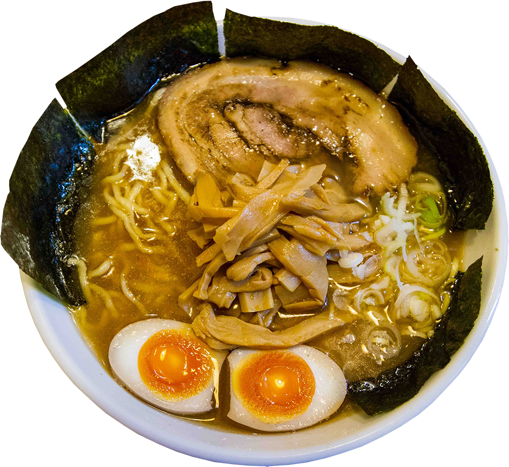
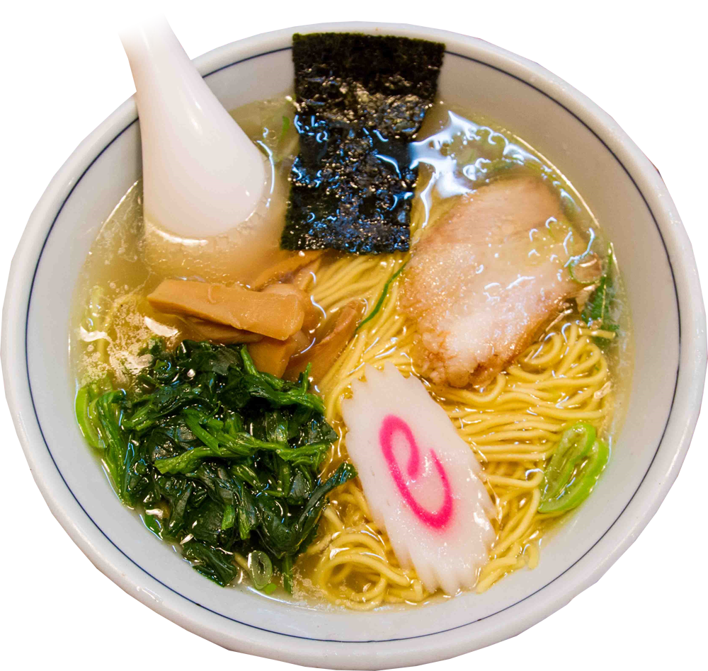
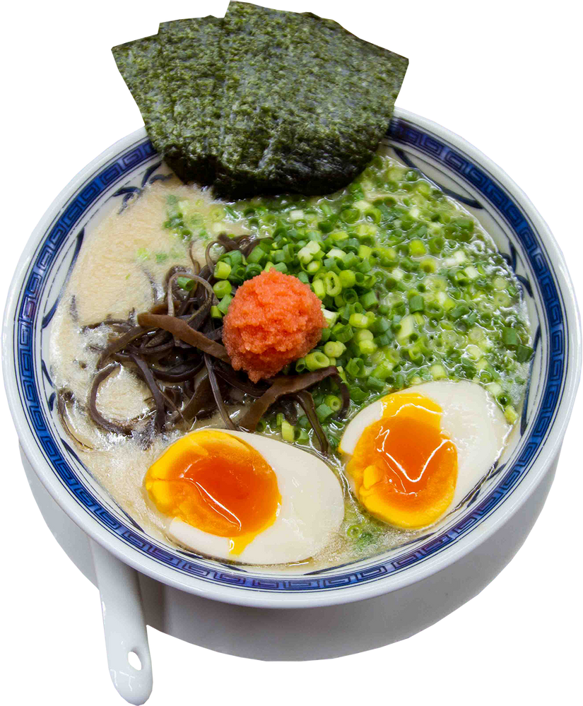
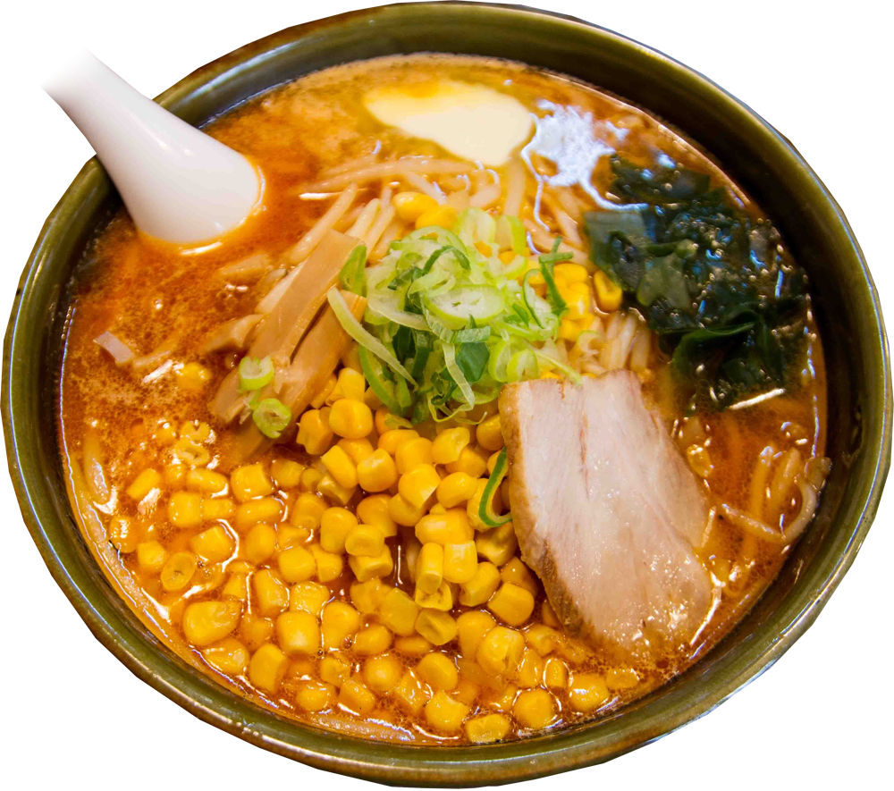

Shoyu (soy sauce) is at the center of Japanese cuisine. So it's no wonder that shoyu ramen was the first ever ramen. While there's an insane amount of shoyu ramen variety, the broth is normally brown in color and naturally carries a salty, tangy flavor. In Tokyo's version, curly noodles are often used.

"Shio" literally means salt. But in a way, shio ramen can taste less salty than shoyu ramen. Its yellowish, clear broth has a contrastingly light and refreshing taste. The soup can be a blend of plenty of vegetables, along with chicken, and sometimes pork or fish. The noodles are usually straight and thin.

Probably the most popular ramen type outside of Japan, tonkotsu ramen has a cloudy and white colored broth. This happens after pork bones are boiled for hours and hours, providing a creamy and almost milky flavor. We have the island of Kyushu to thank for tonkotsu ramen, which originally started out as street stall food.

Miso ramen got its start at "Aji no Sanpei" in Sapporo, Hokkaido. While there are other miso ramen styles around the country, Sapporo's miso ramen is the most famous. It's known for being hearty and lardy - great for those cold Sapporo winters. In addition, butter and corn are popular toppings.